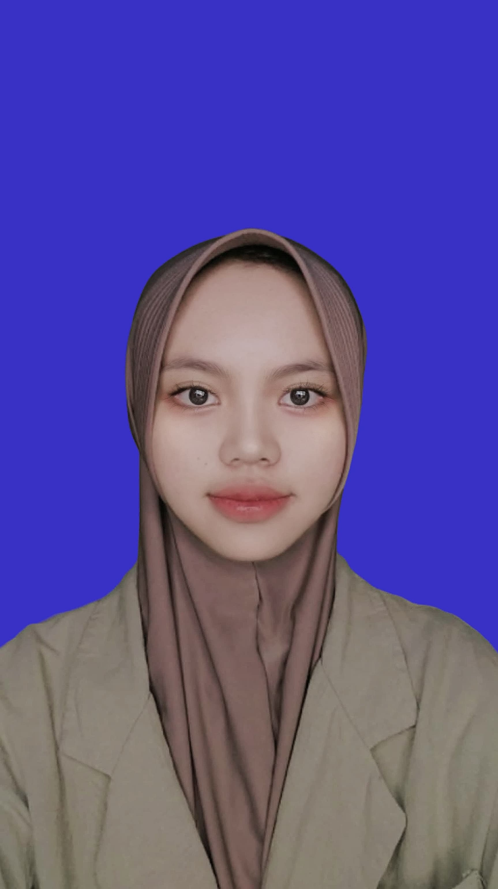
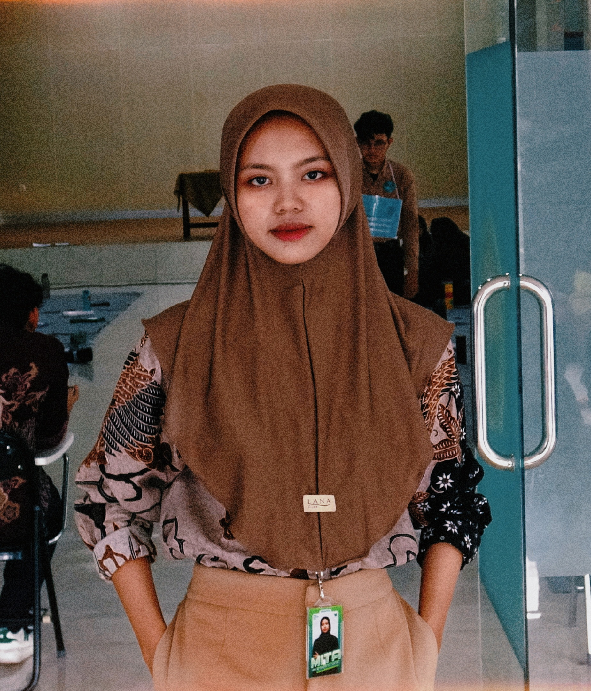
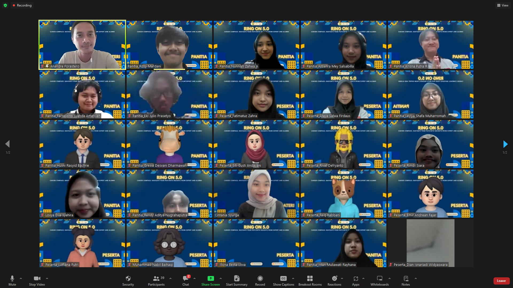

Computer Science Student
Hi, I'm Faiz
Aspiring Developer From Indonesia
I am currently pursuing a degree in Computer Science with interests in artificial intelligence, web development, and problem-solving. I enjoy transforming complex problems into simple, beautiful, and intuitive solutions through code.


